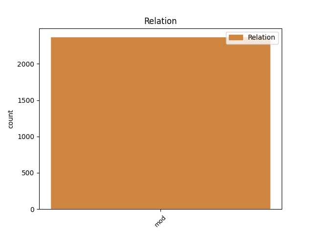
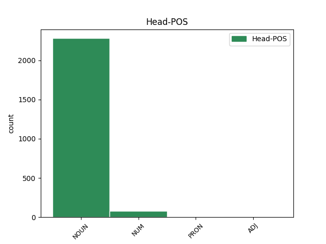
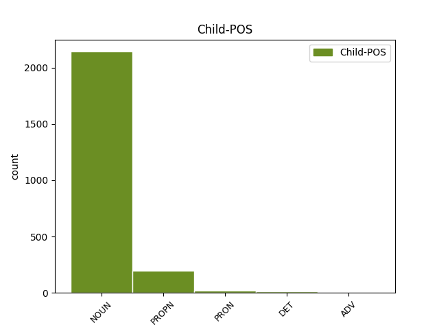

Distribution of features within this leaf



Agreement Rules sorted by frequency.
- When the dependent token is the modifer(mod) of the head token, and the head token is NOUN and the dependent token is NOUN.
1 Šetrí _ _ _ _ 0 _ _ _
2 aj _ _ _ _ 0 _ _ _
3 pani pani NOUN SUfs1 Case=Nom|Gender=Fem|Number=Sing 4 mod _ _
4 ministerka ministerka NOUN SSfs1 Case=Nom|Gender=Fem|Number=Sing 0 _ _ _
5 financií _ _ _ _ 0 _ _ _
6 , _ _ _ _ 0 _ _ _
7 ktorá _ _ _ _ 0 _ _ _
8 stále _ _ _ _ 0 _ _ _
9 nevylučuje _ _ _ _ 0 _ _ _
10 ďalšie _ _ _ _ 0 _ _ _
11 zvyšovania _ _ _ _ 0 _ _ _
12 cien _ _ _ _ 0 _ _ _
13 a _ _ _ _ 0 _ _ _
14 zodpovednosť _ _ _ _ 0 _ _ _
15 za _ _ _ _ 0 _ _ _
16 to _ _ _ _ 0 _ _ _
17 prenechala _ _ _ _ 0 _ _ _
18 na _ _ _ _ 0 _ _ _
19 vedúcich _ _ _ _ 0 _ _ _
20 úsekov _ _ _ _ 0 _ _ _
21 ? _ _ _ _ 0 _ _ _
1 Dôvodom _ _ _ _ 0 _ _ _
2 bol _ _ _ _ 0 _ _ _
3 práve _ _ _ _ 0 _ _ _
4 nevyriešený _ _ _ _ 0 _ _ _
5 problém _ _ _ _ 0 _ _ _
6 umiestnenia _ _ _ _ 0 _ _ _
7 štyri _ _ _ _ 0 _ _ _
8 metre _ _ _ _ 0 _ _ _
9 vysokého _ _ _ _ 0 _ _ _
10 súsošia súsošie NOUN SSns2 Case=Gen|Gender=Neut|Number=Sing 0 _ _ _
11 sv _ _ _ _ 0 _ _ _
12 . _ _ _ _ 0 _ _ _
13 Cyrila cyril PROPN SSms2:r Animacy=Anim|Case=Gen|Gender=Masc|Number=Sing 10 mod _ _
14 a _ _ _ _ 0 _ _ _
15 Metoda _ _ _ _ 0 _ _ _
16 v _ _ _ _ 0 _ _ _
17 Komárne _ _ _ _ 0 _ _ _
18 . _ _ _ _ 0 _ _ _
1 Schytilo _ _ _ _ 0 _ _ _
2 dievčinku _ _ _ _ 0 _ _ _
3 labkami _ _ _ _ 0 _ _ _
4 a _ _ _ _ 0 _ _ _
5 vraví _ _ _ _ 0 _ _ _
6 : _ _ _ _ 0 _ _ _
7 “ _ _ _ _ 0 _ _ _
8 Ty ty PRON PPhs1 Case=Nom|Number=Sing|Person=2|PronType=Prs 11 mod _ _
9 moja _ _ _ _ 0 _ _ _
10 krásna _ _ _ _ 0 _ _ _
11 dievčinka dievčinka NOUN SSfs1 Case=Nom|Gender=Fem|Number=Sing 0 _ _ _
12 , _ _ _ _ 0 _ _ _
13 odnesiem _ _ _ _ 0 _ _ _
14 si _ _ _ _ 0 _ _ _
15 ťa _ _ _ _ 0 _ _ _
16 do _ _ _ _ 0 _ _ _
17 hniezda _ _ _ _ 0 _ _ _
18 ! _ _ _ _ 0 _ _ _
19 “ _ _ _ _ 0 _ _ _
1 Škole _ _ _ _ 0 _ _ _
2 chýbali _ _ _ _ 0 _ _ _
3 priestory _ _ _ _ 0 _ _ _
4 , _ _ _ _ 0 _ _ _
5 a _ _ _ _ 0 _ _ _
6 tak _ _ _ _ 0 _ _ _
7 žiaci _ _ _ _ 0 _ _ _
8 prvého _ _ _ _ 0 _ _ _
9 stupňa _ _ _ _ 0 _ _ _
10 , _ _ _ _ 0 _ _ _
11 čiže _ _ _ _ 0 _ _ _
12 aj _ _ _ _ 0 _ _ _
13 my my PRON PPhp1 Case=Nom|Number=Plur|Person=1|PronType=Prs 0 _ _ _
14 prváčikovia prváčik NOUN SSmp1 Animacy=Anim|Case=Nom|Gender=Masc|Number=Plur 13 mod _ SpaceAfter=No
15 , _ _ _ _ 0 _ _ _
16 mávali _ _ _ _ 0 _ _ _
17 vyučovanie _ _ _ _ 0 _ _ _
18 popoludní _ _ _ _ 0 _ _ _
19 . _ _ _ _ 0 _ _ _
1 Medzi _ _ _ _ 0 _ _ _
2 Slnkom _ _ _ _ 0 _ _ _
3 a _ _ _ _ 0 _ _ _
4 Zemou _ _ _ _ 0 _ _ _
5 je _ _ _ _ 0 _ _ _
6 vzdialenosť _ _ _ _ 0 _ _ _
7 149 _ _ _ _ 0 _ _ _
8 , _ _ _ _ 0 _ _ _
9 6 _ _ _ _ 0 _ _ _
10 miliónov milión NUM NSip2 Animacy=Inan|Case=Gen|Gender=Masc|Number=Plur 0 _ _ _
11 kilometrov kilometer NOUN SSip2 Animacy=Inan|Case=Gen|Gender=Masc|Number=Plur 10 mod _ SpaceAfter=No
12 . _ _ _ _ 0 _ _ _
1 A _ _ _ _ 0 _ _ _
2 pevne _ _ _ _ 0 _ _ _
3 sa _ _ _ _ 0 _ _ _
4 držal _ _ _ _ 0 _ _ _
5 Šer šeriť PROPN SUms2:r Animacy=Anim|Case=Gen|Gender=Masc|Number=Sing 6 mod _ _
6 Chánovho chánov ADJ AFis2x:r Animacy=Inan|Case=Gen|Degree=Pos|Gender=Masc|Number=Sing 0 _ _ _
7 chvosta _ _ _ _ 0 _ _ _
8 . _ _ _ _ 0 _ _ _
Disagree Examples:
1 Spustili _ _ _ _ 0 _ _ _
2 novú _ _ _ _ 0 _ _ _
3 internetovú _ _ _ _ 0 _ _ _
4 televíziu televízia NOUN SSfs4 Case=Acc|Gender=Fem|Number=Sing 0 _ _ _
5 Braňa _ _ _ _ 0 _ _ _
6 Krála kráľ PROPN SSms2:rq Animacy=Anim|Case=Gen|Gender=Masc|Number=Sing 4 mod _ _
1 Od _ _ _ _ 0 _ _ _
2 tej _ _ _ _ 0 _ _ _
3 chvíle _ _ _ _ 0 _ _ _
4 vstupuje _ _ _ _ 0 _ _ _
5 do _ _ _ _ 0 _ _ _
6 hry _ _ _ _ 0 _ _ _
7 slovenská _ _ _ _ 0 _ _ _
8 časť časť NOUN SSfs1 Case=Nom|Gender=Fem|Number=Sing 0 _ _ _
9 Uhorska uhorsko PROPN SSns2:r Case=Gen|Gender=Neut|Number=Sing 8 mod _ SpaceAfter=No
10 . _ _ _ _ 0 _ _ _
1 Do _ _ _ _ 0 _ _ _
2 slovenských _ _ _ _ 0 _ _ _
3 častí _ _ _ _ 0 _ _ _
4 Uhorska _ _ _ _ 0 _ _ _
5 sa _ _ _ _ 0 _ _ _
6 vtedy _ _ _ _ 0 _ _ _
7 utiahla _ _ _ _ 0 _ _ _
8 jedna _ _ _ _ 0 _ _ _
9 časť časť NOUN SSfs1 Case=Nom|Gender=Fem|Number=Sing 0 _ _ _
10 českých _ _ _ _ 0 _ _ _
11 emigrovaných _ _ _ _ 0 _ _ _
12 protestantov protestant NOUN SSmp2 Animacy=Anim|Case=Gen|Gender=Masc|Number=Plur 9 mod _ _
13 a _ _ _ _ 0 _ _ _
14 tu _ _ _ _ 0 _ _ _
15 našli _ _ _ _ 0 _ _ _
16 v _ _ _ _ 0 _ _ _
17 používaní _ _ _ _ 0 _ _ _
18 svoj _ _ _ _ 0 _ _ _
19 vlastný _ _ _ _ 0 _ _ _
20 spisovný _ _ _ _ 0 _ _ _
21 jazyk _ _ _ _ 0 _ _ _
22 presne _ _ _ _ 0 _ _ _
23 tak _ _ _ _ 0 _ _ _
24 , _ _ _ _ 0 _ _ _
25 ako _ _ _ _ 0 _ _ _
26 vo _ _ _ _ 0 _ _ _
27 svojej _ _ _ _ 0 _ _ _
28 českej _ _ _ _ 0 _ _ _
29 vlasti _ _ _ _ 0 _ _ _
30 . _ _ _ _ 0 _ _ _
1 Podľa _ _ _ _ 0 _ _ _
2 princípu _ _ _ _ 0 _ _ _
3 siedmich _ _ _ _ 0 _ _ _
4 slobodných _ _ _ _ 0 _ _ _
5 umení _ _ _ _ 0 _ _ _
6 prvým _ _ _ _ 0 _ _ _
7 stupňom stupeň NOUN SSis7 Animacy=Inan|Case=Ins|Gender=Masc|Number=Sing 0 _ _ _
8 trivia trivium NOUN SSns2 Case=Gen|Gender=Neut|Number=Sing 7 mod _ _
9 je _ _ _ _ 0 _ _ _
10 gramatika _ _ _ _ 0 _ _ _
11 . _ _ _ _ 0 _ _ _
1 Európska _ _ _ _ 0 _ _ _
2 únia _ _ _ _ 0 _ _ _
3 , _ _ _ _ 0 _ _ _
4 čiže _ _ _ _ 0 _ _ _
5 rozmieňanie rozmieňanie NOUN SSns1 Case=Nom|Gender=Neut|Number=Sing 0 _ _ _
6 veľkých _ _ _ _ 0 _ _ _
7 bankoviek bankovka NOUN SSfp2 Case=Gen|Gender=Fem|Number=Plur 5 mod _ _
8 na _ _ _ _ 0 _ _ _
9 drobné _ _ _ _ 0 _ _ _
10 mince _ _ _ _ 0 _ _ _
11 . _ _ _ _ 0 _ _ _